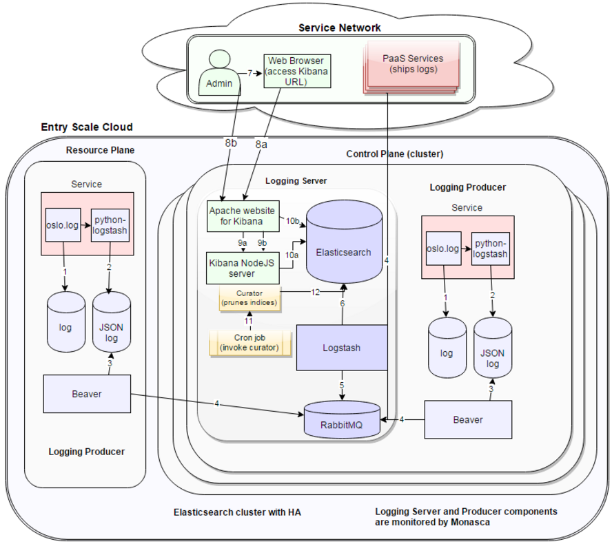

A typical HPE Helion OpenStack cloud consists of multiple servers which makes locating a specific log from a single server difficult. The HPE Helion OpenStack Centralized Logging feature helps the administrator triage and troubleshoot the distributed cloud deployment from a single location.
The Centralized Logging feature collects logs on a central system, rather than leaving the logs scattered across the network. The administrator can use a single Kibana interface to view log information in charts, graphs, tables, histograms, and other forms.
In addition to each of the HPE Helion OpenStack services, Centralized Logging also processes logs for the following features:
This document describes the Centralized Logging feature and contains the following sections:
The Centralized Logging feature is automatically installed as part of the HPE Helion OpenStack installation. The base logging levels will be tuned during installation according to the amount of RAM allocated to your control plane nodes to ensure optimum performance.
No specific configuration is required to use Centralized Logging. However, you can tune or configure the individual components as needed for your environment as detailed in the Configuration the Centralized Logging Service page.
Centralized logging consists of several components, detailed below:
Beaver is a python daemon that takes information in log files and sends the content to RabbitMQ.
RabbitMQ is a message broker for collection of logging data across nodes.
logstash is a log processing system for receiving, processing and outputting logs. logstash retrieves logs from RabbitMQ, processes and enriches the data, then stores the data in Elasticsearch.
Elasticsearch is a data store offering fast indexing and querying.
Kibana is a client-side JavaScript application to visualize the data in Elasticsearch through a web browser. Kibana enables you to create charts and graphs using the log data.
These components are configured to work out-of-the-box and the admin should be able to view log data using the default configurations.
At a high level, the Helion services forward logs to Beaver. Then, Beaver forwards JSON messages to RabbitMQ on the controller0 (management controller) node. Logstash connects to RabbitMQ to read queued messages and process the messages according to the Logstash configuration file. Logstash then forwards the processed log files in Elasticsearch. Users can use the Kibana interface to view and analyze the information, as shown in the following figure:

The logs that are centrally stored are saved to persistent storage as Elasticsearch indices. These indices are stored in the partition /var/lib/elasticsearch on each of the Elasticsearch cluster nodes. Out of the box, each days worth of logs is stored in one Elasticsearch index. As days goes by, the number of indices stored in this disk partition grows, eventually filling up the partition. Each of these indices takes up CPU and memory if they are "open," so if they are left unattended these indices could continue to consume system resources and eventually deplete them.
Elasticsearch, by itself, doesn't prevent this from happening.
HPE Helion OpenStack uses a tool called "curator" that is developed by the Elasticsearch community to handle these situations. HPE Helion OpenStack ships with an hourly cron job that uses curator in conjunction with several configurable settings. This cron job does the following checks:
The following table lists the types of logs collected by Centralized Logging and provides information on how the logs are maintained.
| Data name | Confidentiality | Integrity | Availability | Backup? | Description |
|---|---|---|---|---|---|
| Log records | Restricted | High | Medium | No | Log records have a limited life, and are not archived. The log file on the local filesystem provides a fallback source of logging data (up to 20GB or 45 days) if the logging system fails. |
| Log metadata | Restricted | High | Medium | No | Elasticsearch indexes logged data to allow flexible searching. |
| Credentials | Confidential | High | Medium | No | Credentials for access to Elasticsearch and RabbitMQ are stored in configuration files owned by root with mode 0600. |
| Kibana metadata | Confidential | High | High | No | Kibana stores its search queries, visualizations and dashboards in the ".kibana" index. This index will be replicated across Elasticsearch cluster nodes and is highly available. |
| Monitoring metrics | Restricted | High | High | Yes | Monasca Server stores the various logging metrics and alarm-definitions. These are managed by Monasca. |
| Beaver configuration | Restricted | High | High | Yes | These are backed up as part of deployer repo changes maintained by the administrator. |
| Logrotate configuration | Restricted | High | High | Yes | These are backed up as part of deployer repo changes maintained by the administrator. |
| Curator configuration | Restricted | High | Medium | Yes | Cron job to periodically run and keep the old Elasticsearch indices pruned/closed. These are backed up as part of deployer repos changes maintained by the administrator. |
You can use the Kibana dashboards to view log data. Kibana is a tool developed to create charts, graphs, tables, and histograms based on logs send to Elasticsearch by logstash.
While creating Kibana dashboards is beyond the scope of this document, it is important to know that you can use the default Kibana dashboards or create custom dashboards. The dashboards are JSON files that you can modify or create new dashboards based on existing dashboards.
There are two ways to access Kibana:
Details:
Operations Console method - Access the Operations Console.
Navigate to the Logging Dashboard via the menu.
Direct Access method
If your administrator set a hostname value for external_name in your network_groups.yml file during the configuration process for your cloud then Kibana will be accessed over port 5061 on that hostname.
If your administrator did not set a hostname value then in order to determine which IP address to use to access Kibana you can use this command from your lifecycle-manager node:
grep vip-HZN-WEB /etc/hosts
The output of that command will show you the virtual IP address for Kibana that you should use. Access to Kibana will be over port 5601 of that virtual IP address. Example:
http://<VIP>:5601
Login Credentials
The default username for Kibana is kibana and the password is randomized during installation. To retrieve it, look in the following directory on your lifecycle-manager node:
~/scratch/ansible/next/hos/ansible/group_vars/
In that directory you will have a file for your control plane node and you will need to GREP for the logging_kibana_password. For example, if you were using the Entry-scale KVM with VSA model and you kept the default naming scheme in the example files then your command would look similar to this:
grep logging_kibana_password entry-scale-kvm-vsa-control-plane-1
You can troubleshoot service-specific issues by reviewing the logs. After logging into Kibana, follow these steps to load the logs for viewing:
Once the logs load you can change the timeframe from the dropdown in the upper-righthand corner of the Kibana window. You have the following options to choose from:
When searching there are common fields you will want to use, such as:
For more details on using Kibana and Elasticsearch to query logs, see https://www.elastic.co/guide/en/kibana/3.0/working-with-queries-and-filters.html
To help keep abreast of potential logging issues and resolve issues before they affect logging, you may wish to monitor the Centralized Logging Alarms. To do so:
You can use this filtering technique in the "Alarms" page to look for the following:
To look for sufficient Disk space, filter for "Disk"
To look for sufficient RAM Memory, filter for "Memory"
Situations In Which Logs Might Not Be Collected
Centralized logging might not collect log data under the following circumstances:
For information the centralized logging components, use the following links: